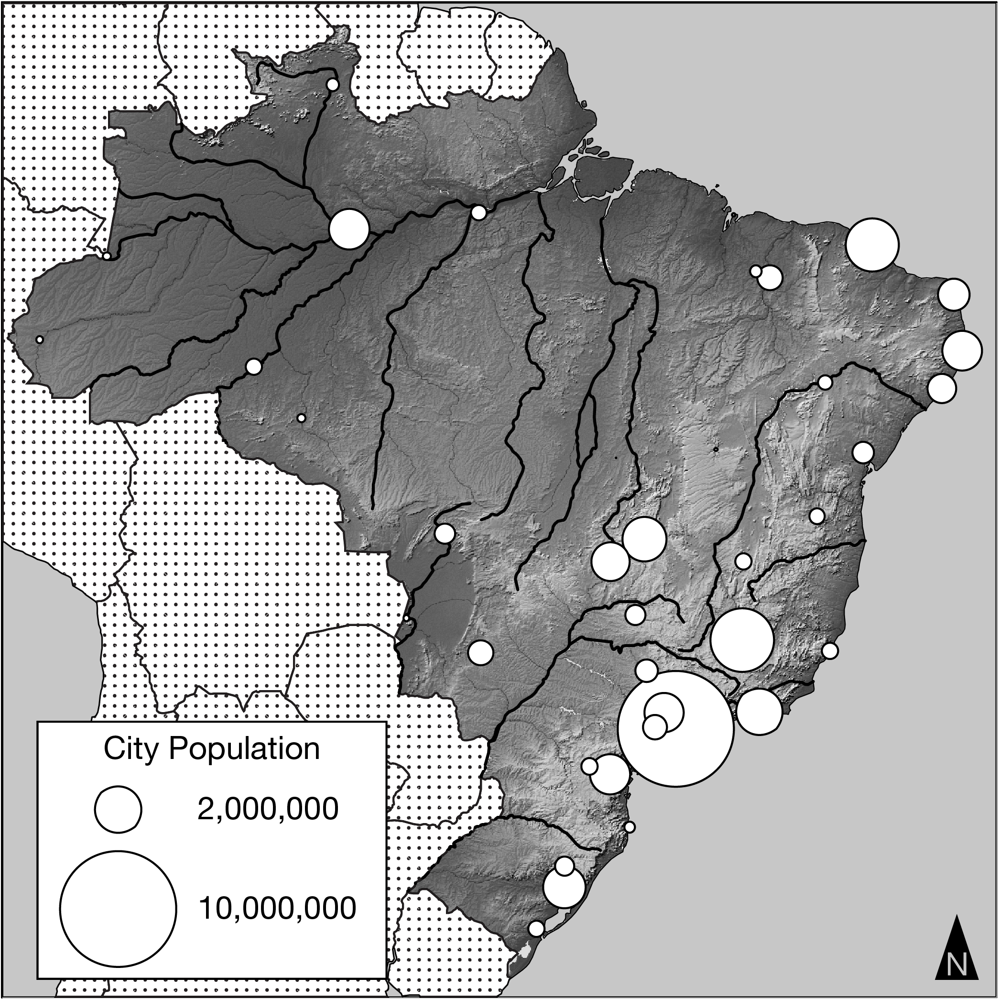

Effect of migration patterns in Brazil

• Dense Atlantic Coastal Strip: Massive urban symbols for São Paulo (10M+), Rio de Janeiro, Salvador, Recife, and Fortaleza.
• Interior Core: Planned federal capital Brasília situated inland to encourage westward migration.
• Amazonian Periphery: Manaus isolated along the Amazon River with sparse surrounding density.
Which of the following best explains a likely effect of Brazil’s population distribution?
Because historical colonization and modern industrial investment clustered along the Atlantic coast, the southeast represents Brazil’s economic core. The vast western interior lacks equivalent infrastructure, transportation links, and industrial capital, creating persistent regional disparities in GDP per capita and standard of living.
The Trap: Distractor (A) claims "more uniform economic growth throughout the entire country as urban areas expand westward". Many students fall for the trap of thinking that building a forward capital (like Brasília) or urbanization automatically balances development across a country.
The Reality & Rule of Thumb: Brazil's population remains heavily clustered along the Atlantic coastal strip. This clustering generates persistent core-periphery inequality (the southeast represents Brazil’s economic core, while the western interior and Amazonian periphery face acute infrastructure gaps). Distractor (B) also traps students by claiming "increased cultural unity"—clustering in reality intensifies socioeconomic segregation (favelas vs. wealthy high-rises).